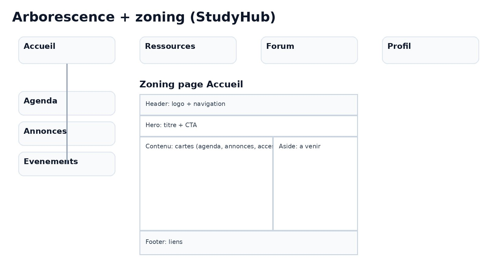
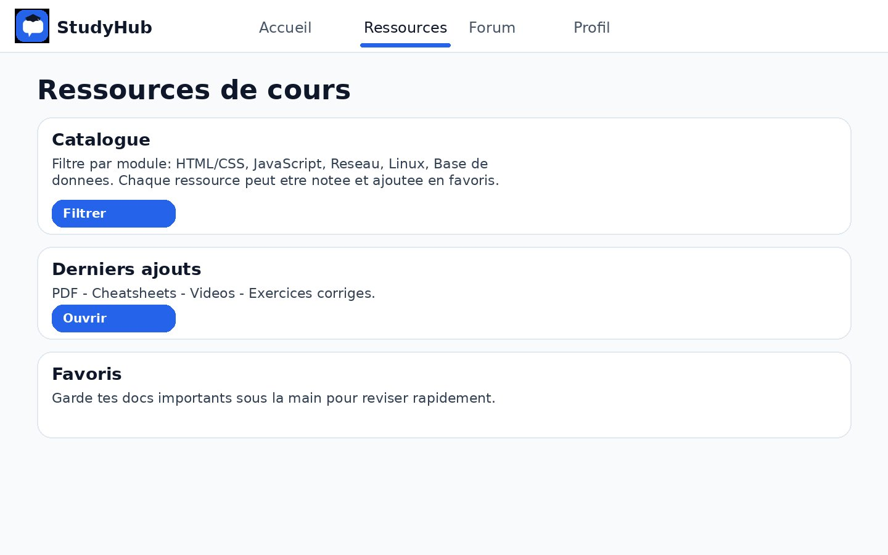
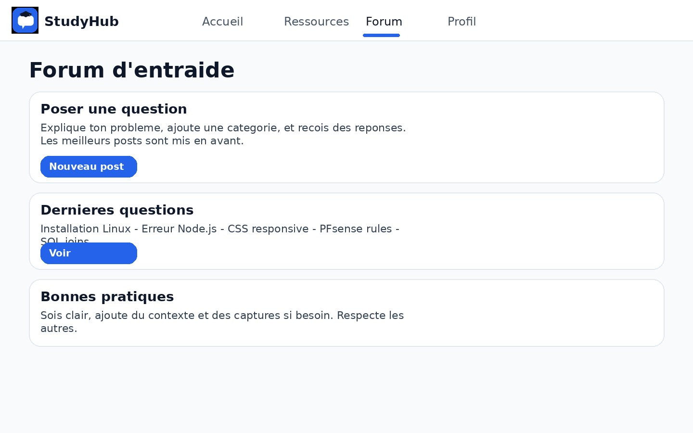

StudyHub — Plateforme Étudiante
Maquette d'une plateforme campus conçue pour centraliser ressources de cours, forum d'entraide et gestion de profil étudiant en un seul endroit.

Type
Maquette UX/UI
Outils
Figma, Node.js, HTML/CSS
Contexte
Atelier EPSI Paris 2025
Statut
Maquette complète
🎯 Présentation du projet
StudyHub est une maquette de plateforme étudiante conçue pour centraliser les ressources pédagogiques, proposer un forum de discussion entre étudiants et permettre la gestion d'un profil utilisateur. Ce projet a été développé dans le cadre de l'atelier « Création et développement d'une maquette » à l'EPSI Paris.
L'objectif était de penser une expérience utilisateur claire et intuitive pour répondre aux besoins concrets d'un campus : accès rapide à l'agenda, aux annonces, aux ressources de cours, et entraide entre étudiants.
📐 Architecture & Zoning
Avant de concevoir les maquettes visuelles, j'ai défini l'arborescence complète du projet et réalisé un zoning de la page d'accueil pour structurer les zones de contenu.
Arborescence + Zoning
Structure des 4 pages principales (Accueil, Ressources, Forum, Profil) et organisation spatiale avec header, hero, contenu principal, aside et footer.

🖥️ Les 3 pages maquettées
Page Accueil
Dashboard étudiant avec agenda du jour, dernières annonces, accès rapide et un aside "À venir" affichant les prochains événements campus (TP, deadlines, hackathon).
Page Ressources
Catalogue de cours filtrable par module (HTML/CSS, JavaScript, Réseaux, Linux, Base de données). Chaque ressource peut être notée et ajoutée en favoris. Accès aux PDF, cheatsheets, vidéos et exercices corrigés.

Page Forum d'entraide
Espace questions/réponses entre étudiants avec création de posts par catégorie. Affichage des dernières questions actives (Installation Linux, Node.js, CSS, PFsense…). Les meilleurs posts sont mis en avant.

⚙️ Stack & Structure technique
- Design : Figma (wireframes + maquettes haute fidélité)
- Frontend : HTML5, CSS3 (intégration des maquettes)
- Backend : Node.js avec API REST (dossier server/)
- Organisation : Dossiers séparés assets, public, server, docs, figma
📁 Structure du projet
studyhub_project/ │ ├─ assets/ → Fichiers de design et images ├─ public/ → Assets utilisés côté front-end ├─ server/ → Backend Node.js avec API ├─ docs/ → Documentation et notes ├─ figma/ → Maquettes réalisées sur Figma └─ README.md → Documentation principale
🎨 Choix UX/UI
- Couleurs : Fond gris clair (#EEF2F7), bleu primaire (#2563EB) pour les CTA et l'indicateur de navigation active
- Cartes : Contenu organisé en blocs distincts avec coins arrondis pour une lecture fluide et aérée
- Navigation : Indicateur actif souligné, logo "StudyHub" reconnaissable avec icône bulle de chat
- Layout Accueil : Grid 2 colonnes (contenu principal + aside événements) pour maximiser l'information utile
Code Source & Maquettes
Le code source, la documentation technique et les maquettes Figma sont disponibles sur le dépôt GitHub.
Accéder au repository →